01 — VALUE BEFORE EFFORT
Surface relevant offers, promotions, and pricing earlier so customers can understand the value of their purchase.

SPECTRUM BUSINESS · BYOD · PRODUCT CONCEPT
A proposed transaction-based purchasing experience that reimagines how small businesses configure multiple mobile lines, bring their own devices, and complete an order through one connected journey.
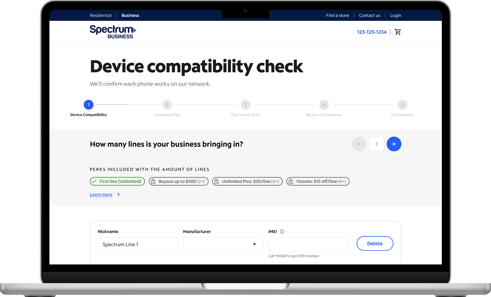
I came up with the initial idea with the Lead Principal Engineer. From there I:
Usability study: run by UXR. My part: helping create the testing brief.
Status: approved by leadership and handed off to Product. [Set to launch end of quarter]
01 / THE CHALLENGE
The existing BYOD purchasing journey required customers to navigate multiple steps before fully understanding the offers, pricing, and savings available to them.
For small businesses purchasing multiple lines, the process introduced repeated interactions across device eligibility, plan configuration, and line setup.
The opportunity was to rethink the experience around the complete transaction rather than treating each line as an isolated purchase.
The goal was to make the journey more efficient, surface relevant information earlier, and help customers understand the value of their purchase before reaching checkout.
HISTORICAL PURCHASING FUNNEL · 68 DAYS
Historical business data from the existing journey. It is not an outcome of the proposed prototype.
2 BYOD LINES
4 BYOD LINES
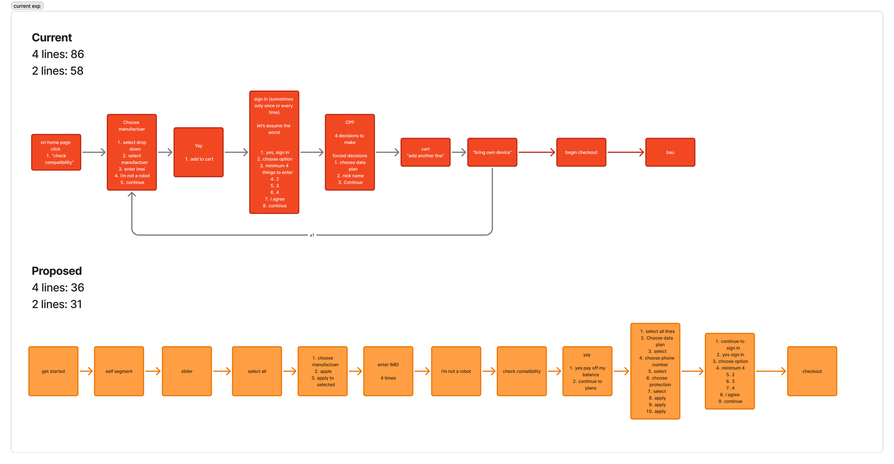
Proposed and modelled interaction-step counts from the transaction-based journey documentation, not measured customer time savings.
02 / RETHINKING THE EXPERIENCE
Rather than asking customers to navigate a series of disconnected interactions, we explored how the purchasing experience could be organized around a single transaction.
The proposed direction focused on connecting device eligibility, line configuration, plan selection, and checkout into a more cohesive experience.
The intention was not simply to reduce the number of screens, but to make every interaction feel purposeful and give customers a clearer understanding of their purchase as they moved through the journey.
01 — VALUE BEFORE EFFORT
Surface relevant offers, promotions, and pricing earlier so customers can understand the value of their purchase.
02 — SIMPLIFY REPEATED ACTIONS
Allow customers to configure multiple lines together instead of repeating the same selections individually.
03 — MAINTAIN CONTEXT
Keep device eligibility, plan details, and pricing connected throughout the purchasing experience.
CURRENT VS. PROPOSED BYOD EXPERIENCE · RECREATED FROM THE PROPOSAL
03 / PRODUCT CONCEPTUALIZATION
Working collaboratively with a developer, I helped conceptualize a new BYOD purchasing experience centered around the needs of small businesses.
We explored how customers could move through the entire purchase within one connected flow, reducing unnecessary repetition while making key decisions easier to understand.
I developed a proposal presentation to communicate the opportunity, proposed experience, and overall direction.
The proposal helped translate an abstract product opportunity into a tangible experience that could be explored, discussed, and further developed.
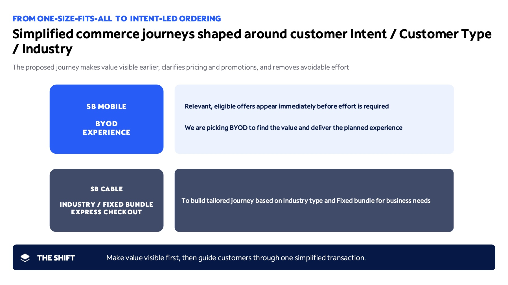
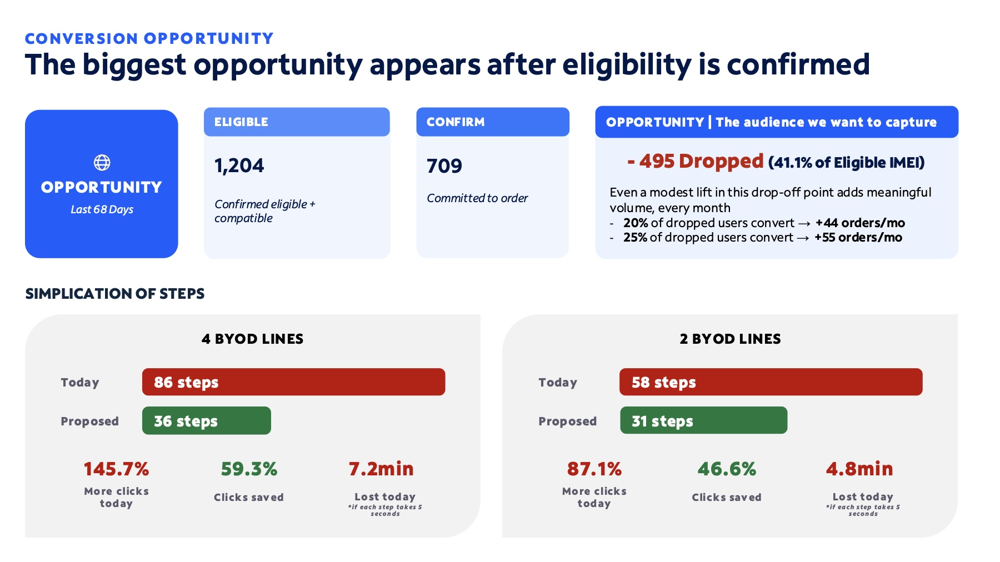
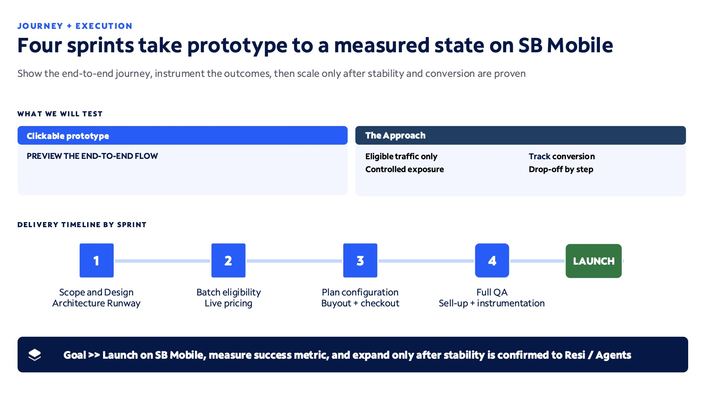
I wrote the deck that was presented to [audience, e.g. leadership]. It covered [the funnel drop-off, current vs. proposed journey, the prototype, and the ask]. It was approved, and the work moved into design and development.
01 — A CONNECTED PURCHASING JOURNEY
Bring device qualification, configuration, plan selection, and checkout into one cohesive experience.
02 — MULTI-LINE EFFICIENCY
Make it easier for customers purchasing several lines to repeat or apply compatible selections without starting over.
03 — TRANSPARENT DECISION-MAKING
Present relevant information, pricing, and eligibility throughout the journey.
04 / BRINGING THE IDEA TO LIFE
To explore how the proposed experience could work in practice, I translated the product direction into an interactive HTML prototype.
Using Claude as an AI-assisted development tool, I built a working representation of the purchasing journey, bringing the proposed interactions and customer decisions to life.
Rather than presenting static screens, the prototype allowed the experience to be explored as a connected transaction, from entering device information through configuring multiple lines and reviewing the order.
This became an opportunity to examine not just how individual screens looked, but how the entire experience behaved.
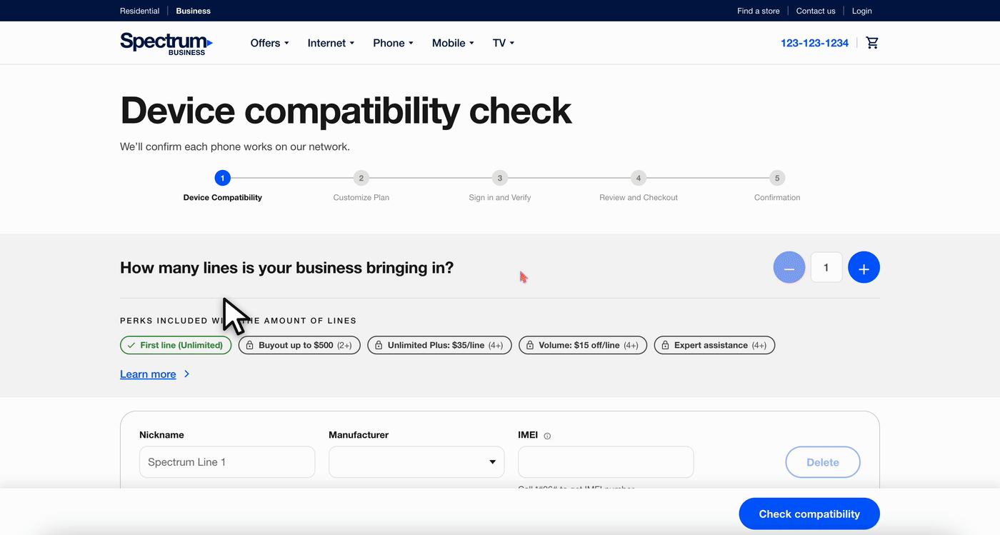
01 — DEVICE ELIGIBILITY
Customers enter their existing device information and IMEI details to determine compatibility.
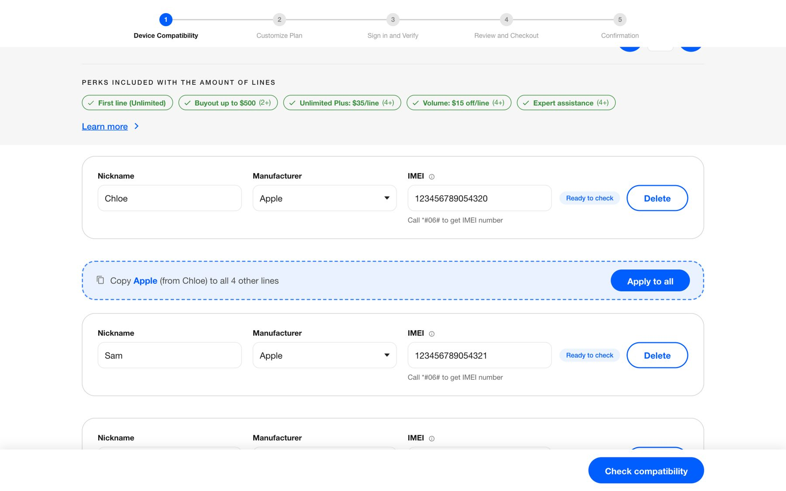
02 — MULTI-LINE CONFIGURATION
Customers configure multiple devices and lines within one connected purchasing flow.
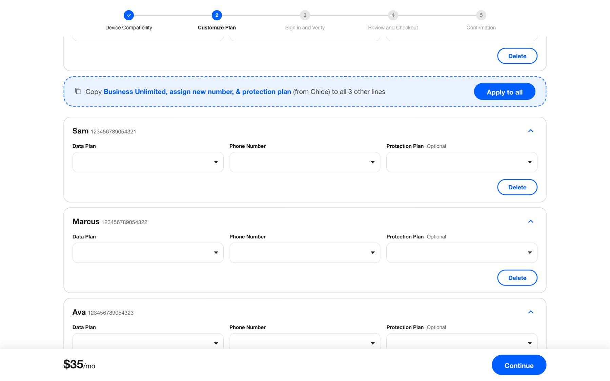
03 — PLAN AND SERVICE SELECTION
Customers explore available plans, select phone numbers, and configure optional services.
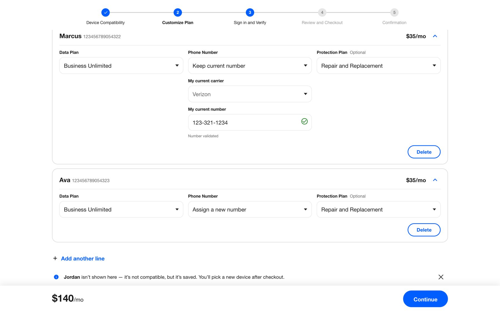
04 — ORDER REVIEW AND CHECKOUT
Customers review the configured lines and associated pricing before proceeding through checkout.
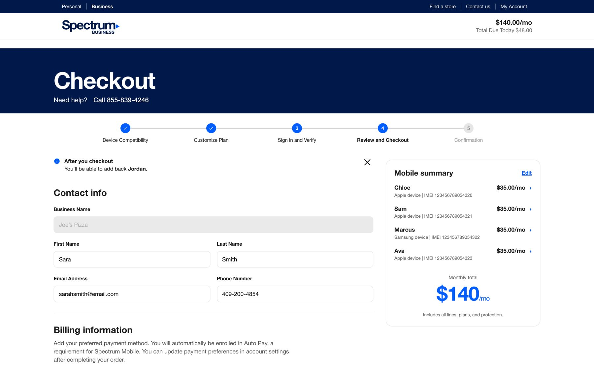
DIFFERENT DIRECTIONS
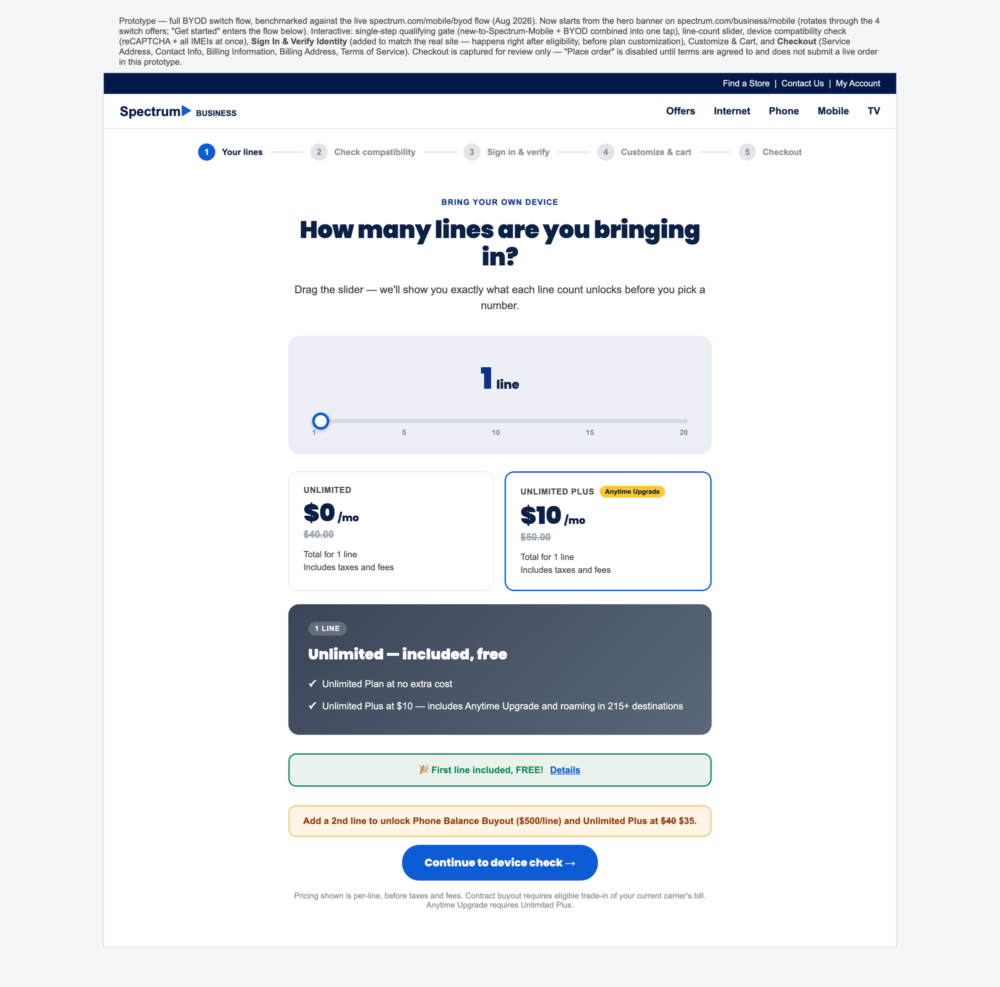
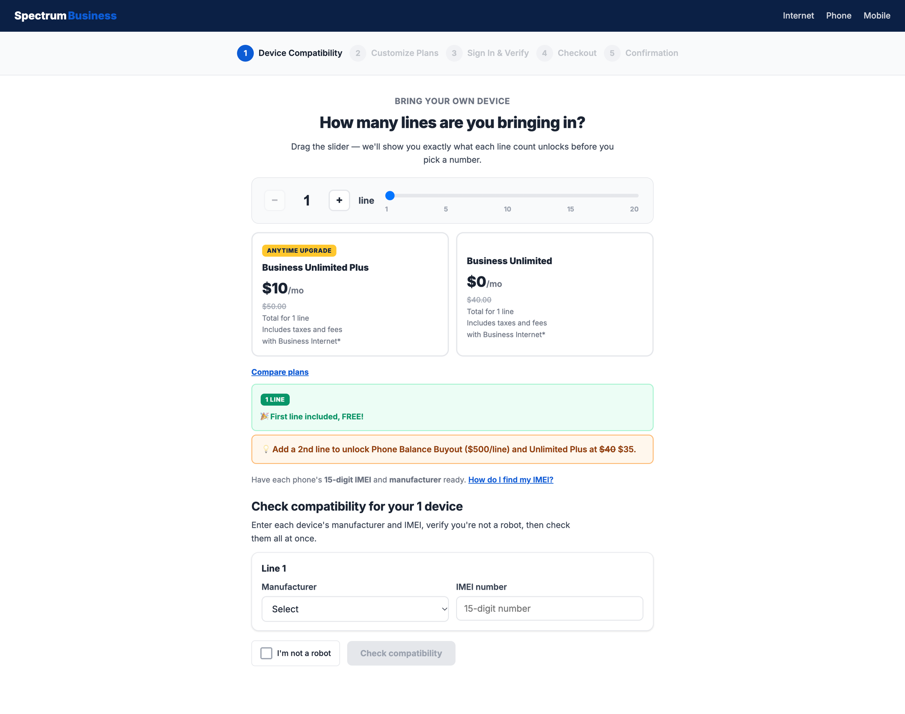
Early iterations of this prototype. You can see that the main goal was about the experience, not the look & feel.
05 / INTERACTION DESIGN
One of the key opportunities in the proposed experience was simplifying the configuration of multiple lines.
Rather than requiring customers to repeat similar selections across every device, the prototype explored ways to apply compatible configurations across multiple lines.
This was particularly important for small businesses purchasing several devices at once.
FEATURE SPOTLIGHT · APPLY TO ALL
The Apply to all interaction allows customers to carry compatible selections across multiple lines, reducing repetitive configuration and helping maintain consistency throughout the order.
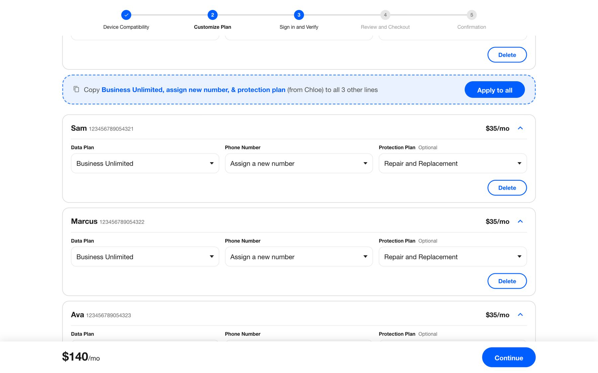
06 / PROJECT RESEARCH
The project team evaluated the proposed BYOD experience through usability testing with small-business customers. These findings come from the broader project team's research and are included here as supporting project evidence.
The documented findings provided insight into how customers understood the purchasing flow, which interactions felt intuitive, and where additional clarity was needed.
The results helped identify both the strengths of the proposed direction and opportunities for further refinement.
“I love that I could just copy and paste, like apply to all, that was actually really convenient and very time saving.”
— Participant 2
Research limitations: the study was directional and based on six participants. It does not imply statistical significance or a proven conversion improvement.
07 / DESIGN OPPORTUNITIES
Although the proposed experience tested positively overall, the research identified an important opportunity around communicating device incompatibility.
Participants generally understood compatibility messaging when they noticed it. However, the notification identifying an incompatible line was not prominent enough to consistently attract attention.
The other participants initially missed it. Some assumed the incompatibility was a typo or system error, while others wanted the issue resolved before proceeding to checkout.
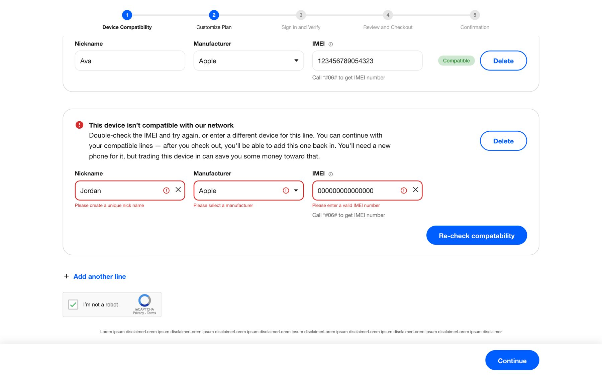
PROPOSED NEXT STEPS · NOT YET DESIGNED OR TESTED
01 — IMPROVE VISIBILITY
Make incompatible-device notifications more prominent and easier to recognize.
02 — CLARIFY COST IMPLICATIONS
Surface potential additional costs in the order summary so customers understand the impact of an incompatible line.
03 — PROVIDE A CLEAR RESOLUTION
Explore ways to resolve or stage incompatible lines before customers proceed through checkout.
04 — STRENGTHEN INTERACTION AFFORDANCES
Make controls such as Apply to all more immediately discoverable.
05 — IMPROVE PRICING TRANSPARENCY
Clarify taxes, fees, and estimated monthly charges.
The study used hypothetical phones and a supplied invalid IMEI. These findings are directional and should be further validated using realistic incompatibility scenarios.
08 / KEY TAKEAWAYS
This project reinforced the value of approaching product design beyond individual screens.
By collaborating with a developer to identify an opportunity in the BYOD purchasing journey, I was able to help translate an initial idea into a tangible product proposal and interactive experience.
Building the prototype using Claude also demonstrated how AI-assisted development can accelerate the process of exploring complex interactions and bringing product concepts to life.
The project highlighted the importance of designing around the complete customer transaction, reducing repetitive effort, and making critical information clear at every stage.
Most importantly, it showed how an idea can become much easier to evaluate, communicate, and improve once it exists as an experience people can actually interact with.
Good product experiences don't just reduce friction. They make complex decisions feel simple.